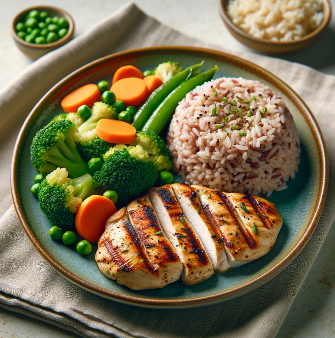

Grilled Chicken Breast with Steamed Vegetables
Ingredients
- 1 boneless, skinless chicken breast (approximately 4-6 oz)
- 1/2 tablespoon olive oil
- Salt and black pepper to taste
- 1 cup assorted fresh vegetables (e.g., broccoli florets, carrots, green beans)
| Nutrition Facts |
| Calories |
300 kcal |
| Protien |
30-35 g |
Meal Procedure
- Preheat your grill or grill pan to medium-high heat.
- Lightly brush or spray the chicken breast with olive oil. Season generously with salt and black pepper.
- Place the chicken breast on the preheated grill and cook for 5-7 minutes per side or until the internal temperature reaches 165°F (74°C) as measured with a food thermometer.
- While the chicken cooks, steam the vegetables. You can use a steamer basket, a pan with a small amount of water, or a microwave steamer. Steam the vegetables for 5-7 minutes or until tender-crisp.
- Once cooked, remove the chicken breast from the grill and let it rest for a few minutes before slicing.
- Serve the sliced chicken breast with the steamed vegetables, and enjoy!